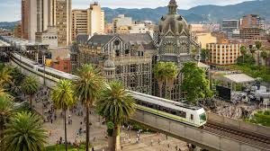

lugares de interes

aqui colocaras los sitios de interes turisticos
- pueblo paisa
- comuna 13
- botero
- parque lleras
- cafe malaga
- parque arbi
gastronomia
los mejores restaurantes de la ciudad de medellin
- el cielo
- tierra querida
- la gloria
- rancherito
- guadaalupe
sancho paisa